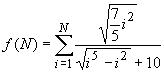

.

Descripción:
- Desarrolla, en conjunto con el
profesor, algunos problemas que implican el uso del ciclo while.

Objetivos:
- Aplicar el ciclo while en la
solución de problemas.
- Aplicar los conocimientos
sobre funciones.
- Utilizar funciones acompañadas
de la estructura "while".

Modalidad:

Instrucciones:

Ejercicios:
-
La
funcion
pares,
que recibe los valores a y b y muestre todos los números pares que
van desde a hasta b incluyendo
los límites.
Suponer que siempre a < b.
Para este ejercicio considera el valor 0 como
par.
El encabezado de la
función, podría ser el siguiente:
def pares (a, b):
Ejemplo:
Si a = -3 y b = 6
El programa mostrará los
valores: -2 0 2 4 6
-
La
función cuentaSuma,
que lea del teclado números enteros y los vaya contando y sumando.
La función se debe detener cuando la suma de los números leídos sea
1000 o más. Cuando la suma sea 1000 o más, el programa debe mostrar
el total de la suma, y la cantidad de números que se sumaron.
El encabezado de la
función, podría ser el siguiente:
def cuentaSuma ( ):
Ejemplo:
Si se teclea 100 50 200 430 250
La función mostrará suma = 1030 cantidad de
números = 5
- La
función perfecto,
que recibe un número n y despliegue al mensaje "EL
NUMERO ES PERFECTO" o "EL NÚMERO NO ES PERFECTO". Los divisores
propios de un número n son aquellos divisores
positivos menores que n. Un número entero positivo n se dice que es
perfecto si la suma de sus divisores propios es igual a n. Así, 6 es un número
perfecto porque sus divisores propios son 1, 2 y 3; y 6 = 1 + 2 +
3. Los siguientes números perfectos son 28, 496 y 8128.
El encabezado de la
función, podría ser el siguiente:
def perfecto (n):
Ejemplo: Si
n = 6
La función mostrará el
mensaje: EL NUMERO ES PERFECTO
-
La función
potencia
que recibe 2 números enteros x y n y regresa el
resultado de elevar x a la n. Como la posibilidad
de que el resultado sea relativamente grande, es conveniente
que el tipo de dato de la función sea float, ya que si la
propusiéramos como int, muy seguramente desbordaríamos su
capacidad. Utiliza el ciclo while. El encabezado de la
función, podría ser el siguiente:
def potencia
(x, n)
Ejemplo: Si
x = 2 y n = 3
La función regresará: 8
-
La función
sumatoria
que recibe un valor entero n
mayor o igual a 1 y regresa el resultado de la siguiente sumatoria.
Utiliza el ciclo while y la función potencia
implementada anteriormente, es decir, en lugar de utilizar la
función math.pow(x,y), utiliza la función
potencia(x,y) para elevar por ejemplo
i5.
El encabezado de la
función, podría ser el siguiente:
def sumatoria (n):

-
La función
serie
que recibe un valor entero n mayor o igual a uno y regresa
el resultado de la siguiente serie:
.
serie(n) =
31 - 32 + 33 - 34 + 35....
El encabezado de la función, podría ser
el siguiente:
def serie (n):
Ejemplo:
serie(2) = 31 -
32 = - 1
serie(3) = 31 - 32 +
33 = 32
La función
aproximacionPI,
que recibe el límite n de la serie para calcular la
aproximación de PI. Existen diferentes algoritmos que nos permiten
obtener una cercana aproximación al valor de la constante PI, uno
de ellos es el Algoritmo Lord Brouncker:

Entre mayor sea el límite de la
serie (n), es más cercana la aproximación que
se obtiene. Prueba calcular
la aproximación de PI con el límite 10000.
El encabezado de la función, podría
ser el siguiente:
def aproximacionPI
(n):
-
La función sumatoria
que resuelva la siguiente sumatoria:

El encabezado de la función, podría ser el siguiente:
def sumatoria (n):
Ejemplo:
sumatoria(4)= (1/2)+(2/4)+(3/8)+(4/16)
- La
función division,
que recibe dos números enteros positivos num y den y calcula la
división entera y el residuo de num entre den utilizando el ciclo
while y la operación resta.
El encabezado de la
función, podría ser el siguiente:
division
(num, den):
Ejemplos:
division
(16, 3) = 5
num den
16 - 3 = 13
13 - 3 = 10
10 - 3 = 7
7 - 3 = 4
4 - 3 = 1
1
¿Cuántas restas se hicieron hasta que num fue menor que den? 5
division (5, 3) =
1
num den
5 - 3 = 2
2
¿Cuántas restas se hicieron hasta que num fue menor que
den? 1
division (1, 3) = 0
-
La
función menu,
que despliegue el siguiente menú en pantalla:
1. Pares
2.
Cuenta y suma
3. Perfecto
4.
Potencia
5.
Sumatoria
6. Serie
7. Aproximacion de
PI
8.
Sumatoria 2
9. Division
0.
Salir
-
En la sección del
"script
principal" construya un programa
completo en Python que utilice la función menu para
desplegar el menú correspondiente y de acuerdo a la opción
seleccionada por el usuario le dé la oportunidad de ejecutar
cualquiera de las funciones que han sido construidas. Debes
utilizar el ciclo while para que se cicle el
programa hasta que el usuario introduzca una opción inválida.

-
Recuerde que la captura de datos y validación de valores debe ser
realizada en la sección del "script principal", pues las funciones
NO pueden realizar las tareas de validación o captura de datos.
- Guardar este archivo con
el nombre: E_Matricula.py

Recursos:
6. Funciones
7. While

Especificaciones de
entrega:
Entrega tus archivos en Canvas:
.
|